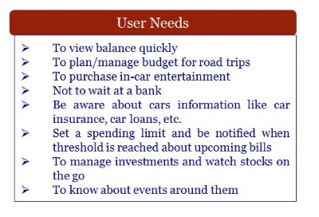
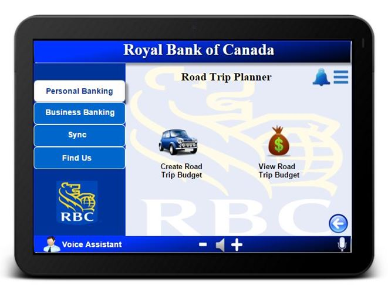

Royal Bank of Canada (RBC) is a global conglomerate that is interested in exploring the future of financial services and accesses in a connected world. They are trying to integrate financial services to a car’s operating system or the infotainment system. RBC would like to discover user-centered use cases that can take advantage of real time systems and internet connectivity within automobiles.
Everything, from User Research, to crafting the wireframes in Balsamiq, creating an interactive prototype in InVision, talking to the client(RBC) and leading a team of four designers and engineers.
The existing RBC products such as their official website, the RBC mobile banking application, RBC internet banking and mobile wallet have a very simple, formal and sophisticated interface. They use a minimal color scheme of blue, white and gold in all their products to create uniformity and most of the functions are accessible to the users once they are signed-in in a secure manner because it is a banking application.
There are no other applications as of yet to perform financial transactions while driving but some of the in-car operating systems include Android auto, Apple CarPlay and Blackberry QNX. These systems are platforms that enable applications to run on them. The team used the information harnessed by these systems in their design process such as the capability to detect an automobiles resources like oil and gas information or the car’s connectivity to the internet/GPS.
The team conducted user research to collect information on the user needs and identify the target users for our client’s application. We conducted four focus groups that included four, three, five and four people respectively and a pilot study consisting of one student. We also interviewed 6 people. Apart from this, an online survey was conducted which was taken by 12 people.
Before refining the application and reiterating the process, a review session from the client and peers was conducted. A lot of positive comments were given to Booking Appointment, Investment Videos Know My Car and Road Trip Budget Planner feature. Some of the constructive criticism from the peers included cluttered wireframes, too many functions for a car application and the client suggested to change the security mechanism from fingerprint to something that’s more advanced as well as to allow the system to talk to other RBC products or create some sort of unification or uniformity.
The design cycle was reiterated to review and analyze prior user research. Brainstorming was done to meet the tradeoffs between the client’s demands and those of the users. The team refined the personas, scenarios and storyboard. The following changes were anonymously approved by the design team:
A think-aloud test of the Interactive prototype was conducted. A UF Ph.D. student, who owns a car, was the participant and he was given a brief introduction of the application. He was given a task to pay for his car insurance. The user easily logged in to the system and saw the options but he couldn’t find the icon on the home screen easily. Then he clicked on pay bills but did not found the option. So he pressed the back button and went inside Know My Car to find Car Insurance. He clicked and paid the insurance easily. The user found the interface very user friendly but he wished for more scaffolding or aids for first time users so that they can know about the functionalities. He also wished for lesser and more frequently used functions on the home screen for which a customization (Add/Remove Widgets) had already been implemented on the lower fidelity prototype.
The design solution for the In-Car Financial Access Application for RBC was achieved using a complex iterative process to ensure the needs of the users are met without disappointing the client. The process started by getting to know the target audience and analyzing their thoughts, and needs, developing personas in order to frame the user’s portrait, crafting the best scenarios, making scenarios visual by constructing the storyboards, building the task flow, creating wireframes and then refining the wireframes after repeating the same cycle. The application has been designed so that the RBC customers can perform financial transactions on the go, considering the safety of the user.
